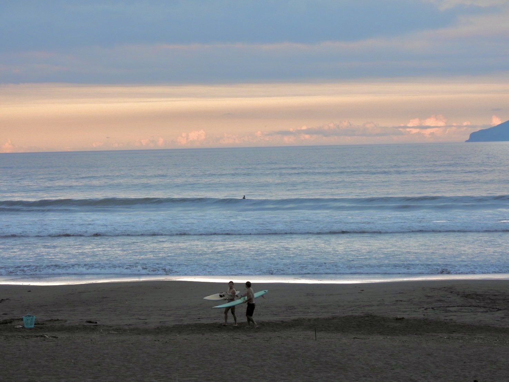
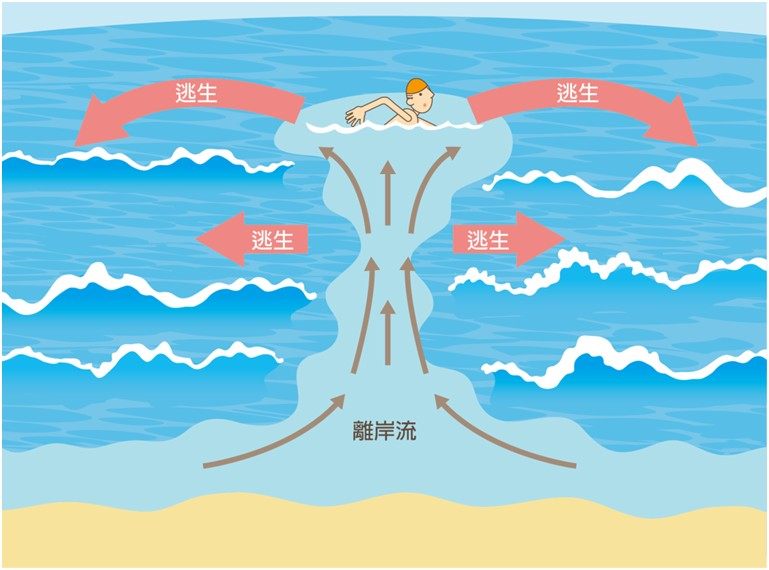
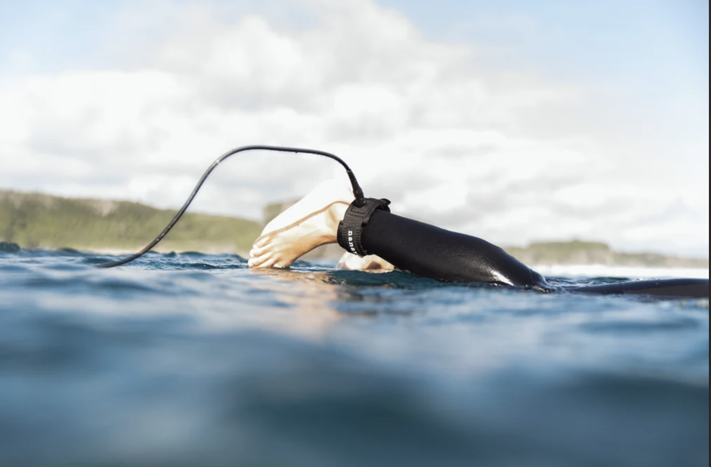

衝浪知識・新手起步
看起來平靜，不代表適合新手下水
離岸流：水色混濁、快碎卻沒有白沫的區域要留意
下水前先確認腳繩有沒有綁好
不會游泳可以衝浪嗎？第一次下水前該知道的 3 件事
常有人問：不會游泳可以學衝浪嗎？答案是可以——新手課大多在踩得到底的淺灘上課，重點從來不是「會不會游泳」，而是腳繩有沒有綁好、教練有沒有在旁邊顧、今天的海況適不適合新手下水。真正該留意的，是接下來這三件事。
海況比你想的複雜
能不能下水，不是看「今天有沒有出太陽」就能判斷。夏天離台灣很遠的颱風，照樣可能把大浪送過來；新手常常想「颱風那麼遠應該還好吧」，結果海況早就超出能應付的範圍。找教練或有經驗的浪友問清楚今天適不適合新手，比自己憑感覺猜準得多——出發前也可以先打浪點名稱問問機器人，浪高、週期跟分級燈號一次看到。

離岸流才是真正的敵人
離岸流是海浪拍上岸後，海水匯聚成一股往外海流回去的力量。沒有浮具又不知道怎麼脫離的話，很容易被帶到外海，一慌就更容易溺水。辨識訣竅：水色比周圍混濁、浪快碎的區域卻沒有白沫、水面出現一排垂直於岸邊的小波紋——這三個徵兆同時出現，那多半就是離岸流的位置。第一次到不熟的浪點，務必先問教練今天的地形怎麼看。

沒學會讀浪跟划水，永遠站不起來
體驗課能站起來，很多時候是教練幫忙挑浪、推板的功勞。之後自己租板練習才會發現「怎麼突然站不起來了」——這不是退步，是進入真正要學「讀浪」跟「划水」的階段，本來就會經歷這段卡關期，撐過去就是自己的功力。
下水前 checklist
- 先上正式體驗課，不要只租板子附贈的教學，落差真的很大
- 問清楚今天適不適合新手，教練回答含糊就換一家
- 裝備到位：腳繩、合身防磨衣，帥不帥不重要，能不能平安回家比較重要
- 把離岸流的三個徵兆記起來，哪怕只記得「顏色不同、沒有白沫的水道要小心」也好

不會游泳真的不等於不能學衝浪，但值得信任的教練跟合適的海況，才是能不能安心下水的關鍵。出發前加 LINE 好友、打浪點名稱查一次即時浪況，比憑印象猜安不安全準確。